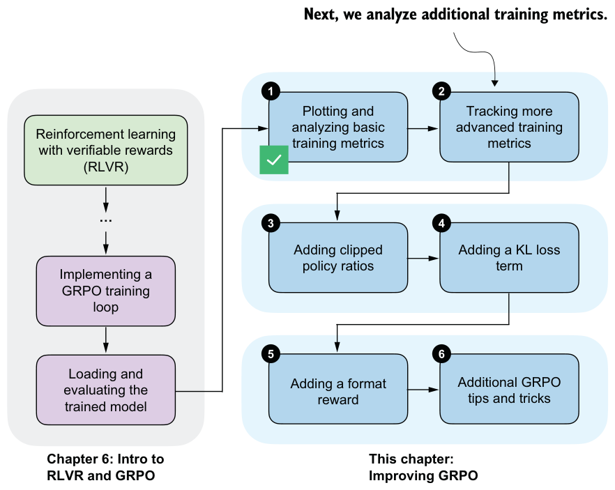
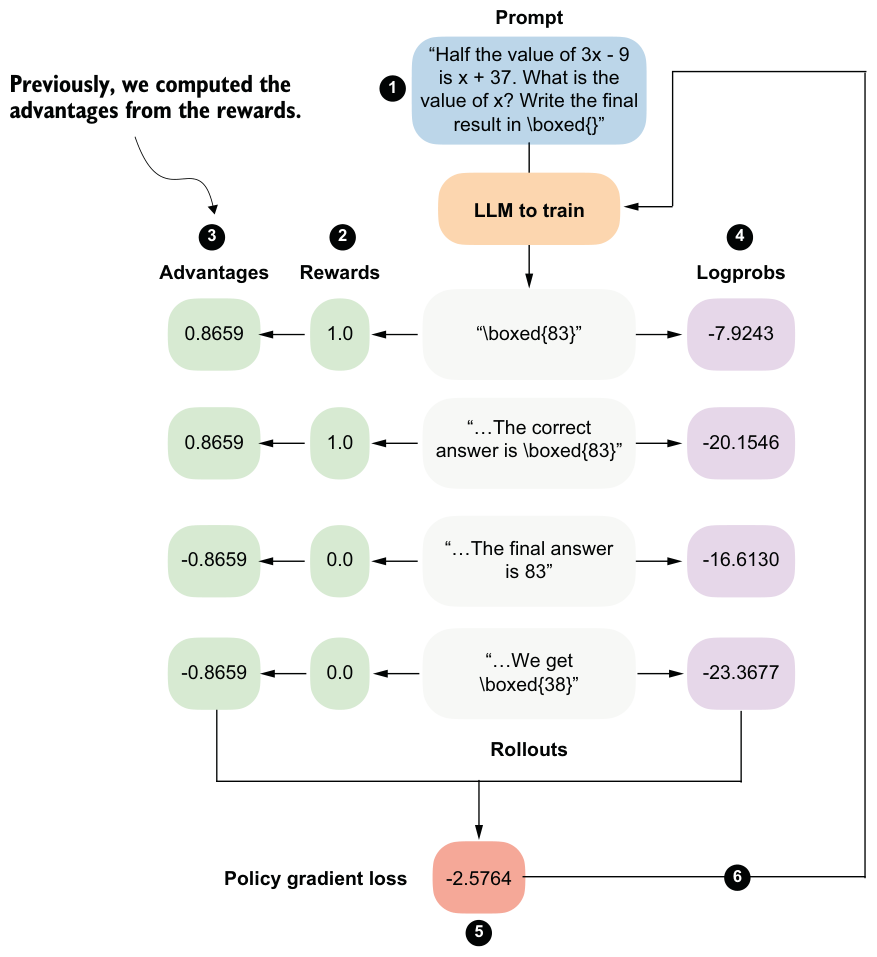

7.3Tracking more advanced GRPO performance metrics
Beyond the small set of basic metrics for monitoring GRPO training runs, several additional metrics can help in understanding the training dynamics, as illustrated in figure 7.5.

Two examples of the more advanced metrics mentioned in figure 7.5 are the rollout advantages already computed in the compute_grpo_loss function in chapter 6 and the entropy of the generated sequences.
7.3.1Advantage tracking
As part of the GRPO algorithm, we compute so-called advantages, as discussed in chapter 6 and shown in figure 7.6. Beyond their role in the loss computation, these values are useful for analyzing and understanding training dynamics.

In particular, we compute two summary statistics derived from the advantages shown in figure 7.6, namely, their average value (the sample mean) and their standard deviation.
import torch
def compute_advantage_stats(rewards_list):
rewards = torch.tensor(rewards_list)
advantages = (rewards - rewards.mean()) / (rewards.std() + 1e-4) adv_avg = advantages.mean().item()
adv_std = advantages.std().item()
return advantages, adv_avg, adv_stdAs a simple illustration, consider a small sample of four reward values, similar to those shown in figure 7.6:
adv, adv_avg, adv_std = compute_advantage_stats([1., 1., 0., 0.])
print(f"Advantages: {adv}")
print(f"Advantage mean = {adv_avg:.4f}, std = {adv_std:.4f}")The output is as follows:
Advantages: tensor([ 0.8659, 0.8659, -0.8659, -0.8659])
Advantage mean = 0.0000, std = 0.9998Because of how advantages are computed in GRPO, their mean is always zero. In practice, this makes the mean mostly a sanity check that the implementation behaves as expected.
The standard deviation is more informative. Values close to 1 indicate a well-scaled gradient signal and are usually associated with stable updates. Very small values point to a vanishing learning signal, which often happens when rewards collapse. Very large values indicate overly spiky updates that can destabilize training.
An extreme case occurs when all rewards in the sampled group are identical. In that case, the normalized advantages are also identical, with a standard deviation of zero. As a result, the policy gradient update becomes zero, and no model weight update occurs. In other words, the model fails to learn from these cases. For example, consider the following scenario:
adv, adv_avg, adv_std = compute_advantage_stats([0., 0., 0., 0.])
print(f"Advantages: {adv}")
print(f"Advantage mean = {adv_avg:.4f}, std = {adv_std:.4f}")which prints the following outputs:
Advantages: tensor([0., 0., 0., 0.])
Advantage mean = 0.0000, std = 0.0000The outputs are similar if we replace the all-zero rewards in compute_advantage_
stats([0., 0., 0., 0.]) with all-one rewards in compute_advantage_stats([1., 1.,
1., 1.]).In practice, it is best to consider the advantage statistics together with the average reward. As mentioned earlier, an average reward of 1.0 is actually a desirable outcome, even though it means that the training signal has disappeared, because the model is answering everything correctly. At this point, it usually makes sense to stop training or to switch to more challenging examples.